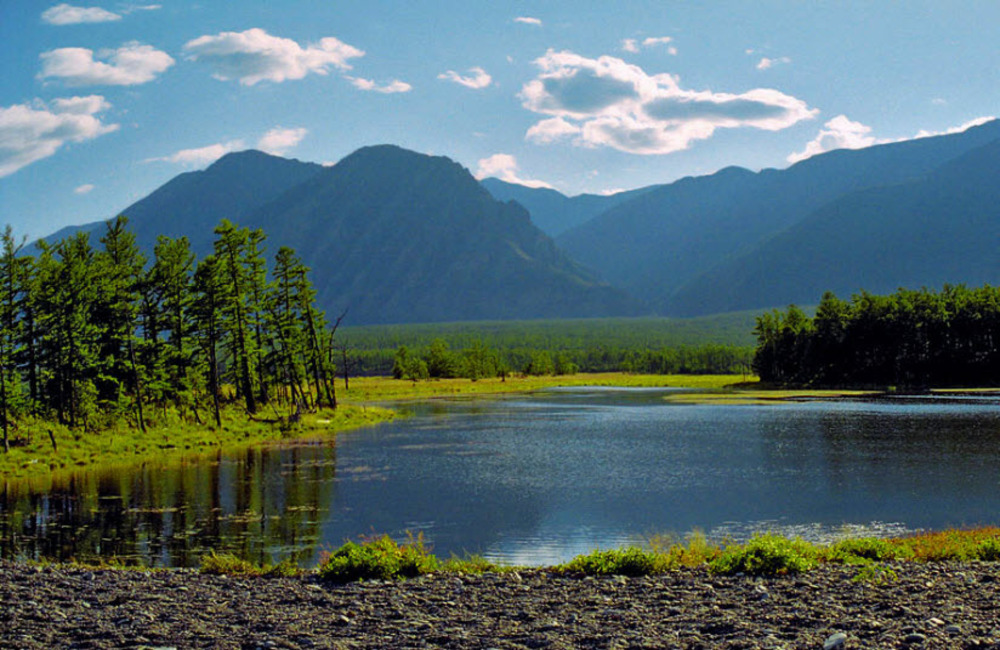
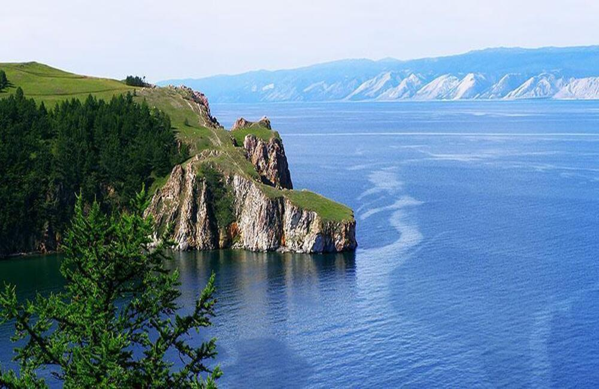

Иркутская область — регион Восточной Сибири с уникальной природой, тайгой и горными массивами. Столица региона — Иркутск, один из самых красивых исторических городов Сибири.
Здесь находятся бескрайние леса, горы, реки и озёра. Регион считается одним из самых экологически чистых в России.
Основные направления: лесная промышленность, добыча ресурсов и туризм. Но главная ценность региона — это озеро Байкал.

Байкал — самое глубокое и одно из древнейших озёр планеты. Ему более 25 миллионов лет.
1642 м
до 40 м
2/3 видов уникальны
кристально чистый зимой